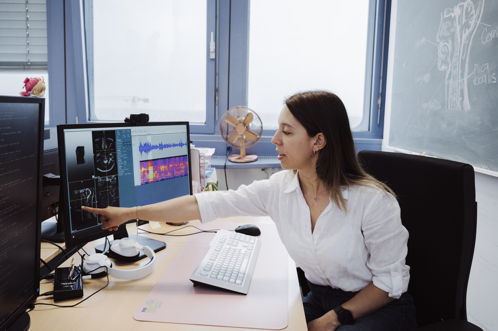

Pattern Recognition Lab, FAU Erlangen-Nurnberg
Computational speech and language biomarkers
Dr.-Ing. Paula A. Pérez-Toro
Group Head for Speech and Language Understanding at the Pattern Recognition Lab, Friedrich-Alexander-Universitat Erlangen-Nurnberg, developing multimodal AI for medical signal processing, medical imaging, and data-driven therapy decisions.

Group head at the Pattern Recognition Lab
German representative for eVoiceNet
Associate researcher at UdeA and guest researcher at King's
Research
Human speech as a window into health
Paula A. Pérez-Toro studies how speech, language, video, and multimodal signals can support earlier, more interpretable assessment of neurological and mental health conditions. Her work spans pattern recognition, deep learning, time-series modeling, image processing, acoustic and linguistic biomarkers, cross-lingual modeling, and clinical machine learning.
Neurodegenerative disease
Methods for detecting and characterizing Alzheimer and Parkinson disease using speech timing, acoustic patterns, language features, and movement-related signals.
Clinical interpretability
Feature sets and models designed to make automated decisions understandable to clinicians, including work on speech timing and lexico-semantic features.
Multilingual health AI
Cross-linguistic and multilingual speech analysis for datasets in English, Spanish, and other languages, with attention to model transfer and bias.
Speech articulation and MRI
Collaborative work on speech articulation, vocal tract MRI synthesis, and machine learning for personalized clinical speech therapy.
What we do
Speech, language, and medical imaging for clinical AI
The Speech and Language Understanding group develops interpretable machine learning methods that connect speech, language, video, and vocal tract imaging with clinically meaningful questions: earlier assessment, therapy support, multilingual robustness, and responsible deployment.
Selected publications
Recent and representative work
Publication list refreshed from an 82 papers spanning 2016-2026. A complete and current list is available through Google Scholar.
A Speech-to-Video Synthesis Approach Using Spatio-Temporal Diffusion for Vocal Tract MRI
An audio-to-video diffusion framework that generates vocal tract MRI sequences from speech, supporting clinically relevant visualization of articulatory motion.
Automated Speech Markers of Alzheimer Dementia: Test of Cross-Linguistic Generalizability
A cross-linguistic study of speech timing and lexico-semantic markers for Alzheimer dementia, visualized here through the study design and classification results.
Contrastive Learning Approach for Assessment of Phonological Precision in Patients with Tongue Cancer Using MRI Data
A compact view of the MRI frames, model design, and articulatory analysis used for phonological precision assessment in a clinically relevant speech setting.
A speech-to-video synthesis approach using spatio-temporal diffusion for vocal tract MRI
Medical Image Analysis, Article 104053. Publisher: Elsevier.
Google ScholarConfidence-guided error correction for disordered speech recognition
ICASSP 2026, pp. 18447-18451. Publisher: IEEE.
Google ScholarAutomated Speech Markers of Alzheimer Dementia: Test of Cross-Linguistic Generalizability
Journal of Medical Internet Research, 27, e74200. DOI: 10.2196/74200.
DOIExploring biases related to the use of large language models in a multilingual depression corpus
Scientific Reports, 15, Article 36197. DOI: 10.1038/s41598-025-19980-x.
DOIDifferential privacy enables fair and accurate AI-based analysis of speech disorders while protecting patient data
npj Artificial Intelligence, 1, Article 37. Publisher: Nature Publishing Group.
Google ScholarkidsNARRATE: a versatile corpus for studying Chinese-English bilingual L2 narrative skills in preschoolers
Language Resources and Evaluation, 59, 3117-3138. DOI: 10.1007/s10579-025-09851-2.
DOIMultilingual Speech and Language Analysis for the Assessment of Mild Cognitive Impairment
Proceedings of Interspeech 2024. DOI: 10.21437/Interspeech.2024-2115.
DOIAutomatic Assessment of Alzheimer's across Three Languages Using Speech and Language Features
Proceedings of Interspeech 2023. DOI: 10.21437/Interspeech.2023-2079.
DOIInterpreting acoustic features for the assessment of Alzheimer's disease using ForestNet
Smart Health, 26, Article 100347. DOI: 10.1016/j.smhl.2022.100347.
DOIAcademic CV
Appointments, education, and leadership
Management Committee representative for Germany
European Network to Advance the Development and Implementation of Vocal Biomarkers (eVoiceNet).
Scientific Representative
Profile Center Medical Engineering (FAU MT), Erlangen-Nurnberg, Germany.
Research Associate / Scientific Coordinator
Coordinator of the FAU EVUK project "Next-generation AI for Integrated Diagnostics."
Researcher
Pattern Recognition Lab, Friedrich-Alexander-Universitat Erlangen-Nurnberg.
Guest Researcher
Harvard Medical School for generative AI applications in cine-MRI, and King's College London for multilingual longitudinal assessment of depression.
Lecturer
Department of Computer Science, FAU Erlangen-Nurnberg.
Lecturer
Department of Electronics and Telecommunications Engineering, Universidad de Antioquia, Colombia.
PhD in Computer Science, Summa Cum Laude
FAU Erlangen-Nurnberg. Thesis: Acoustic and Linguistic Analysis in Neurological and Psychiatric Disorders.
MSc in Telecommunications Engineering, Summa Cum Laude
Universidad de Antioquia. Thesis on speech and natural language processing for customer satisfaction and neurodegenerative disease assessment.
BSc in Electronic Engineering
Universidad de Antioquia. Project on gait assessment of Parkinson's disease using inertial sensors and nonlinear dynamics features.
Recognition
Awards, prizes, and scholarships
Recent distinctions across doctoral research, competitive funding, scientific outreach, and international academic exchange.
- 2025 Elsbeth Wendler-Kalsch Promotionspreis
- 2025 ATE Promotionspreis, Alumni TF Erlangen
- 2025 FAU Emerging Talent Initiative project funding
- 2025 First place, Science Slam at Tag der Technischen Fakultat
- 2024 Taukadial Challenge, Interspeech 2024
- 2024 Summa Cum Laude PhD Thesis, FAU Erlangen-Nurnberg
- 2023 Travel Grant, Interspeech
- 2019 - 2020 BAYLAT research stay at the Pattern Recognition Lab
- 2020 DAAD scholarship for exchange students
Academic service
Community, reviewing, and outreach
Conference and workshop organization
Local Organizing Committee Conference Chair for TSD 2025; co-organizer and co-chair of the AI-Based Speech Biomarkers session at Forum Acusticum Euronoise 2025; and co-organizer of MICCAI 2024 MMMI / ML4MHD workshops.
Program committees and reviewing
Program committee work for SPADE at ICASSP 2025 and ML4CMH at AAAI 2024; reviewer for venues including Nature Aging, npj Digital Medicine, Scientific Reports, Interspeech, ICASSP, and IEEE journals.
Mentoring and networks
Mentor in ARIADNE and EELISA mentoring programs, connecting researcher for LATinBAY, and digitalization coordinator for BioGeCo, the Colombian-German Network for Research Innovation.
Languages
Spanish native; English full working proficiency; German intermediate proficiency.
Contact
Pattern Recognition Lab
Friedrich-Alexander-Universitat Erlangen-Nurnberg
Chair of Computer Science 5 (Pattern Recognition)
Martensstrasse 3, 91058 Erlangen, Germany